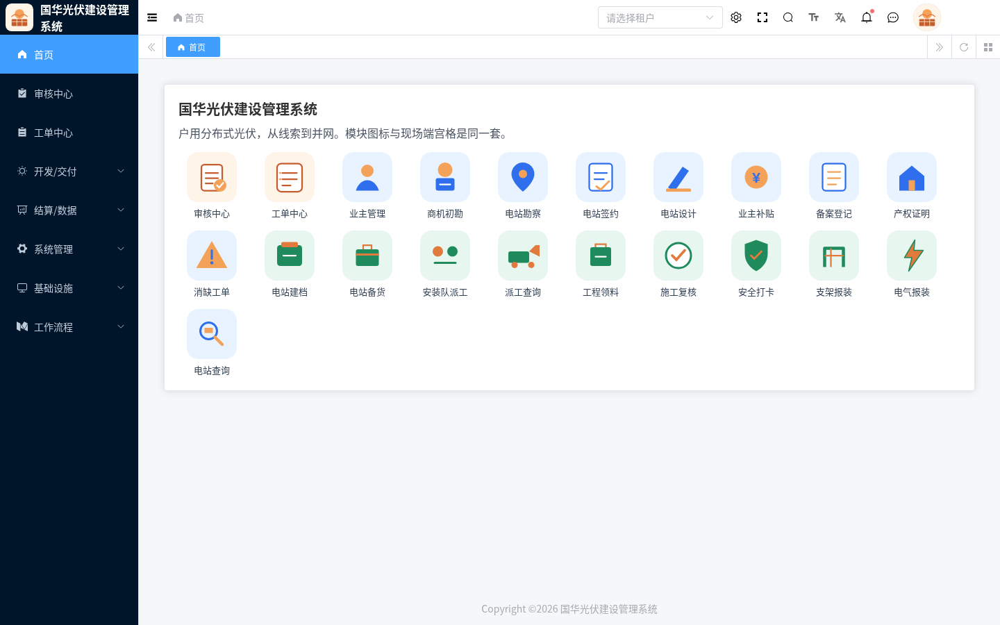

总体说明
国华光伏建设管理系统 用于办理户用分布式光伏项目：从登记业主、商机初勘、现场勘察、补贴与签约、备案和设计，到建档、备货、派工、领料、施工复核、支架和电气报装，再到电表安装。电脑端和现场端共用同一套账号和数据。
这份说明面向实际使用的同事和前来演示的客户，按当前演示环境可以完成的操作编写。左侧目录可以展开或收起，右上角可以搜索，每一页右侧是本页目录。
系统是干什么的
系统把一座电站从线索跟进到装表的全过程，拆成一张张业务单据。每一张单都有自己的状态、办理人和审核节点。上一环节完成后，系统会按「开启条件」打开下一张单；有的环节还有「限制提交」，例如领料必须等派工完成才能提交。
它不替代供电公司或电网侧的正式并网手续，也不在这一期提供电站发电监控、质量整改整单、变更对照、电子签署或证件自动识别。这些未开放能力见 当前未开放的能力。
电脑端和现场端怎么用
系统有两个入口，登录时租户名称请填写 国华光伏建设管理系统。
| 端 | 演示地址 | 适合做什么 |
|---|---|---|
| 电脑端 | https://admin.yuhuisoft.cn/ | 审核、查询、系统配置，以及建档、备货等集中办理 |
| 现场端 H5 | https://h5.yuhuisoft.cn/ | 现场登记、定位打卡、拍照和提交，也可编译为小程序 |
也可以用手机扫描下面的二维码进入对应入口。


图：电脑端登录页。租户请填写「国华光伏建设管理系统」。
图：现场端登录页。

图：电脑端登录后的首页入口。
现场端底部是「首页」「应用」「我的」。首页有审核中心和工单中心；业务模块在「应用」的「开发/交付」里。审核中心和工单中心也可以从应用宫格进入。更细的操作见 登录与两端。
主流程走哪几步
建议按职责分别办理，不要由同一个人包办所有单据。
- 开发经理新建 业主，再提交 商机初勘。
- 审核员在 审核中心 通过后，现勘员办理 电站勘察。
- 勘察通过后，业主补贴 与 合同签约 同时开启，由开发经理办理。
- 补贴通过后开启 备案登记；签约通过后开启 电站设计。设计师打开「待接单」点「接单」，单据进入「待设计」后再填写并提交。
- 备案和设计都通过后，项目经理办理 电站建档。
- 建档通过后，电站备货 与 安装队派工 同时开启。仓储办理备货，安装队负责人新建派工批次。
- 备货通过后开启 工程领料，但要等派工完成才能提交。派工通过后开启 施工复核。
- 复核通过且领料完成后，提交 支架报装 和 电气报装。完工自检通过在电气报装中上传 PDF 完成，见 完工自检。
- 支架和电气都完成后，开启 电表安装。
产权证明 和 消缺工单 是电站开发中的独立模块，不作为上述主路径的必经闸门。安全打卡跟随已派工的电站，不卡住领料或报装。更完整的示意图见 快速上手。
常见角色分工
| 角色 | 主要工作 |
|---|---|
| 开发经理 | 业主、初勘、补贴、签约、备案 |
| 现勘员 | 勘察定位、拍照、转派 |
| 设计师 | 在「待接单」中接单，再于「待设计」中填写并提交 |
| 项目经理 | 电站建档 |
| 仓储 | 电站备货 |
| 安装队负责人 | 派工、领料、复核、报装、电表、安全打卡 |
| 审核员 | 审核中心通过或驳回 |
| 分公司经理 | 查看范围内电站，也可作为审批人 |
审批设置、现场端品牌和角色菜单需由已授权的管理员在电脑端操作。没有写权限时只能查看，不能保存或提交。数据范围不同，能看到的电站也不同，详见 角色与权限。